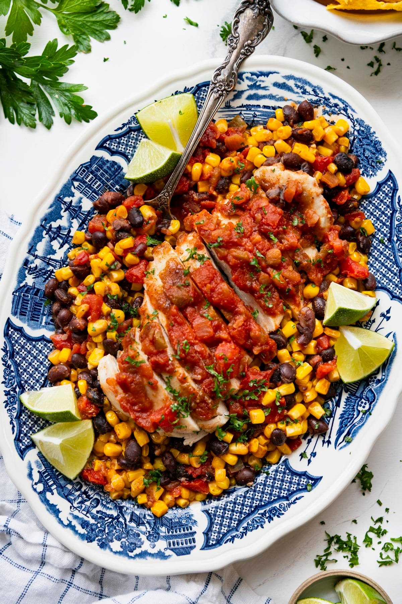

One Pan Salsa Chicken
Back to Home

Ingredients
- 1 bag frozen corn (3 cups)
- 1 can drained & rinsed black beans
- 1 can drained petite diced tomatoes (don't rinse)
- 1 cup favorite salsa
- 1 tsp minced garlic
- 1/2 tsp cumin
- 2 boneless, skinless chicken breasts
- Salt, pepper, pepper flakes, chili powder to taste
Steps
- Pre-heat oven to 375 degrees farenheit
-
Stir together corn, beans, tomatoes, 1/2 cup salsa, garlic and all
spices in deep glass cooking/baking pan.
- Place chicken breast on top, salt & pepper both sides
- Pour rest of salsa on top of chicken breast
-
Bake for 45-60 minutes until chicken hits 165 degrees internal
temperature
-
Remove chicken from dish and shred, chunk, or slice.Return to dish and
mix
- Serve with rice or tortillas and enjoy!